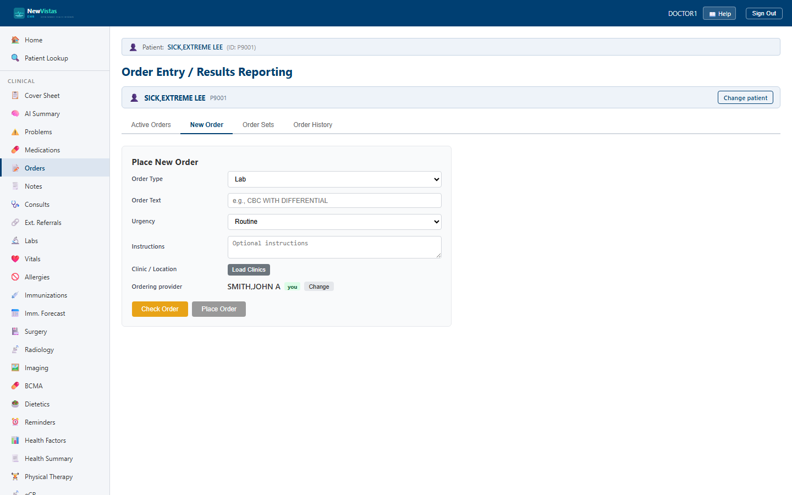

Order Entry
The Order Entry / Results Reporting screen is where you place, check, sign, and manage orders for a patient — labs, pharmacy, radiology, consults, nursing, diet, and vitals — including reusable order sets. It is the equivalent of the CPRS Orders tab.
Open Order Entry
- In the sidebar, click Order Entry (or go to
/orders). - If a patient is already in context, their orders load automatically. Otherwise, in the patient bar type the patient ID (e.g.
P9001) and click Load.

What you see
The four tabs
A tab bar across the top switches between the working views:
- Active Orders — the current orders, with a filter dropdown (Current, All, Discontinued, Completed/Expired, Pending, Unsigned).
- New Order — the form for placing a single order.
- Order Sets — pre-built bundles you can place all at once.
- Order History — a date-range search of past orders.
Acting on an order
Each row in the Active Orders table carries a status badge and the actions that fit it:
- Sign — for Pending or Active orders.
- Hold and DC (discontinue) — for Active orders.
- Release — for orders on Hold.
Placing a new order
On the New Order tab, choose the Order Type, type the Order Text, set Urgency (Routine / Urgent / STAT), add optional Instructions, optionally pick a Clinic / Location, and confirm the Ordering provider:
- Check Order runs order checks first — any warnings appear in a highlighted box with their severity.
- Place Order files the order; it then appears under Active Orders.
Order sets
The Order Sets tab lists bundles as cards. Pick one to expand it, then tick the orders you want, choose the provider, and place them. They are filed as pending orders that appear under Active Orders for you to sign.